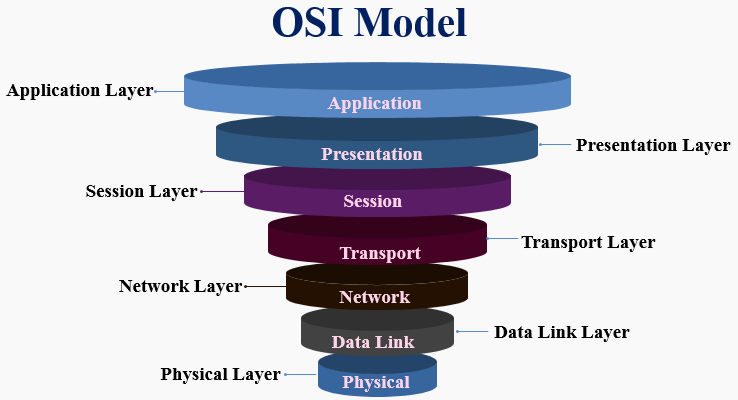

WEB TASARIMA GİRİŞ
İNTERNETİN BAŞLANGICI
1960 yılında Amerika Birleşik Devletleri hükümeti sağlam ve özel bir bilgisayar ağı kurmak için çalışmalara başladı. 1969’da ABD Savunma Bakanlığı ARPANET askeri ağını kurdu. 1971’de Roy Tomlinson ilk maili attı.
1980’lerde Ulusal Bilim Vakfı yeni bir ABD omurgasının finansmanı için toplandı 1985 yılında internet kullanılmaya başlandı. 1990’da Sir Tim-Berners Lee tarafından ilk web sitesi hazırlandı.
1991 world wide web kullanıma sunuldu. 30 Nisan 1993’te CERN tarafından WWW ön eki ile İnternet kamunun ulaşabileceği şekle getirildi. 12 Nisan 1993 tarihinde ODTÜ’den Ankara-Washington arasında kiralık hat ile Türkiye’de ilk İnternet bağlantısı gerçekleşti
TCP: Transmission Control Protocol IP: İnternet Protocol
Birçok protokolün toplandığı bir protokoller ailesidir. Bu referans modeline en çok kullanılan iki protokol ismi verilmiştir. Protokol; Cihazlar arası iletişimde kullanılan iletişim kurallarını belirleyen ağ dilleridir. Her bir protokolün ayrı görevi vardır.
TCP / IP Mimarisi ve Katmanları
1. Uygulama Katmanı (Application Layer)
Bu katmanda veriyi göndermek isteyen uygulama ve kullandığı dosya biçimi bulunarak gönderilen verinin türüne göre farklı protokoller çalıştırılır (HTTP, SMTP, FTP, Telnet, NNTP, HTTPS)
2. Ulaşım Katmanı (Transport Layer)
TCP ve UDP ulaşım katmanı protokolleri, bir üst katmandan gelen veriyi paketleyip bir alt katmana gönderir. Eğer veri bir seferde gönderilmeyecek kadar uzunsa, alt katmana verilmeden önce parçalara ayrılır. Her birine sıra numarası verilir. Bu işlemleri genelde TCP protokolü yapar. UDP protokolü daha çok sorgulama amaçlı kullanılmaktadır.
3. Yönlendirme Katmanı
Yönlendirme katmanında tanımlı IP ve ICMP protokolleri, bir üst katmandan gelen segmentleri alıcıya, uygun yoldan ve hatasız ulaştırmakla yükümlüdür. Bu amaçla IP katmanında gelen segmentlere özel bir IP başlık bilgisi eklenir. ICMP protokolüüzerinden gönderilir.
4. Fiziksel Katmanı
Bu katmanda herhangi bir protokol tanımlı değildir. IP başlığı oluşturulmuş bir bilgi hem kaynak bilgisayarın IP’sini, hem de hedef bilgisayarın IP’sini tutar. Fakat yerel ağiçerisinde bilgi transferi yapılacak makineye ulaşmak için makinenin Ethernet kartının MAC ( Media Access Control-Ortama Erişim Adresi ) olarak bilinen donanım adresinin tespit edilmiş olması gerekir.
OSI MODELİ
Open Systems Interconnection (OSI) modeli ISO (International Organization for Standardization) tarafından geliştirimiştir. Bu modelle, ağ farkındalığına sahip cihazlarda çalışan uygulamaların birbirleriyle nasıl iletişim kuracakları tanımlanır.
Fiziksel Katman ( Physical Layer )
Bu katmanda tanımlanan bir protokol çalışmaz, ilgili web sitesine ulaşmak istediğimizde gönderdiğimiz istek Ağ Kartı (Ethernet), Anahtar Cihazı (Switch) ve ilgili Ağ (Network) cihazı tarafından analog sinyaller dijitale çevriliyor ve serüvenimiz başlıyor.
Veri Hattı Katmanı ( Data Link )
Fiziksel olan istemin hangi data taşıma yöntemiyle yapılacağının belirlendiği katman burasıdır. Bu katmanda MAC adresleme yapılır ve datanın taşıma kuralı belirlenir. Token Ring, Frame Relay gibi.
Network Katmanı ( Network Layer )
Bu katman artık datanın paketlenmiş hale gelmesi ve routing işleminin yapıldığı katmandır. Routerlar için L3 denildiğini veya routing işlemi yapan switchlere L3 switch dendiğini duymuşsunuzdur. İşte o Layer 3(Katman) tanımı burdan gelmektedir. Bu katmanda artık paketimiz routing(Yönlendirme) işlemi de yapılarak bir üst katmana gönderilmeye hazır hale gelir.
Taşıma Katmanı ( Transport Layer )
Bu katman artık TCP /IP paketlerini özelde ise bizim paketimizin karşı adrese güvenle gitmesini sağlayan ve gidemeyen paketlerin gidemediği bilgisinin tutulduğu gerektiğinde ise yok edildiği katmandır. Adının da hakkını verdiği ve datanın nakil edildiği, taşındığı katmandır. TCP veya UDP gibi protokoller bu katmanda çalışırlar.
Oturum Katmanı ( Session Layer )
İletişim kuran bilgisayar server veya bilgisayar arasındaki iletişimin session halini aldığı ve oturumların kapanabileceği veya giriş yapılabilecek olan katman burasıdır.
Sunum Katmanı ( Presentation Layer )
Bu katmanda artık ilgili dökümanlar her iki bilgisayarda da okunabilir hale gelmiştir, mpeg jpg veya png gibi formatların anlaşılabileceği alandır. Ayrıca bu katmanda şifreleme algoritma belirleme gibi yöntemler çalışabilir.
Uygulama Katmanı ( Application Layer)
Artık paketimiz en üst katmana geldi, bu katmandan sonra data artık başka bir layer üzerine aktarılmaz, son gelinecek katmandır ve uygulamalar bu katman üzerinde haberleşir. Örneğin: http, ftp, telnet gibi uygulamaların haberleştiği yer burasıdır.
Başa Dön
1